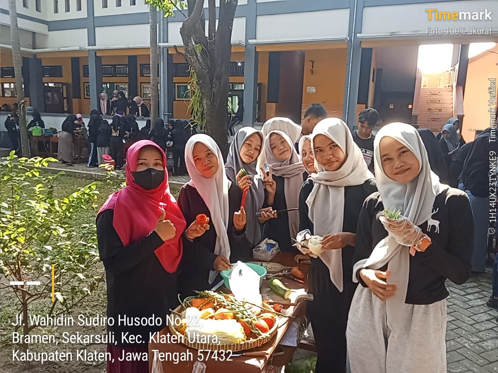
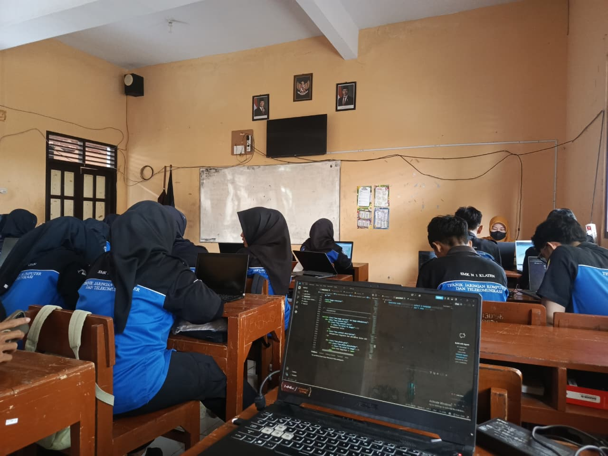
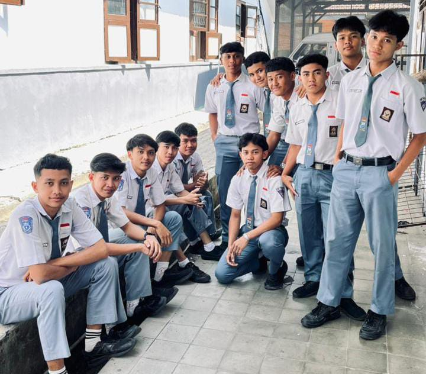
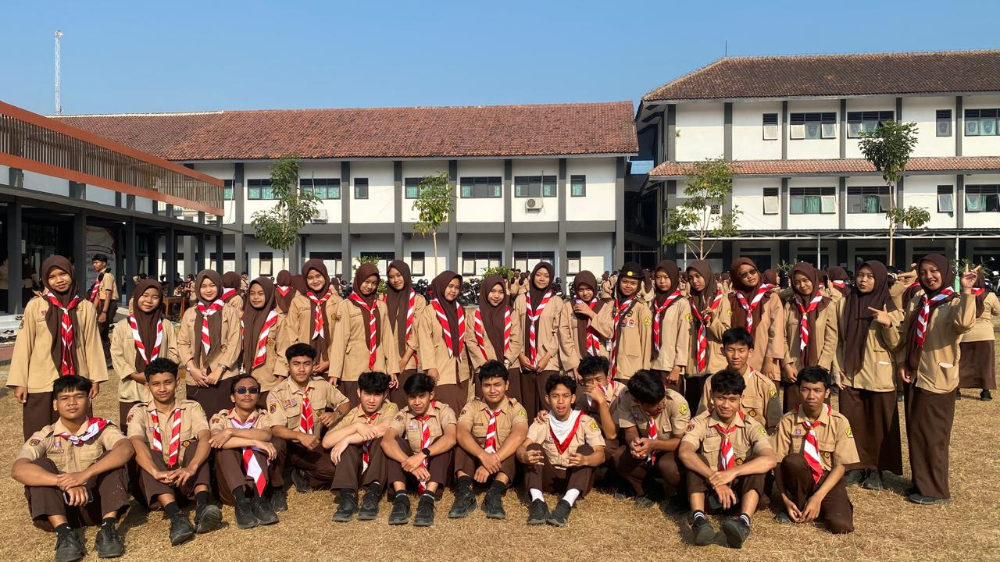
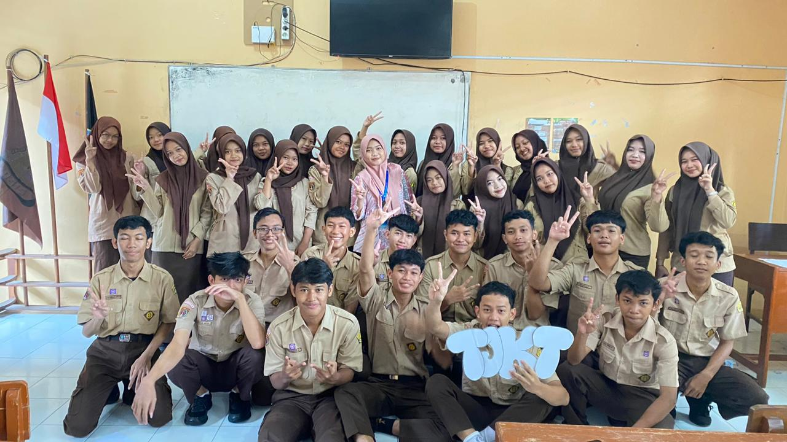
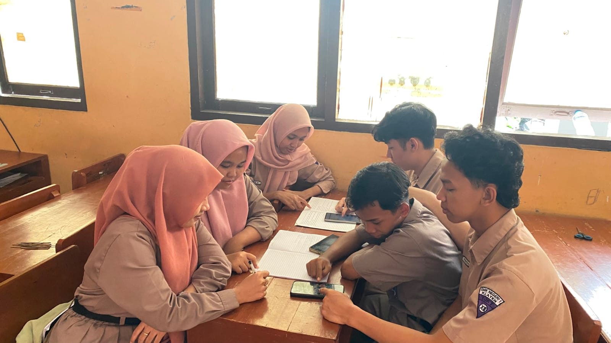
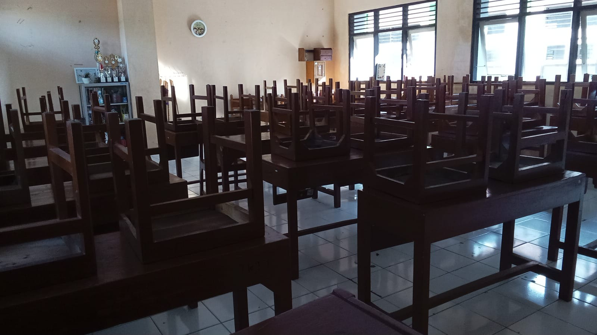

Selamat Datang
Selamat datang di Website Jadwal Pelajaran Digital XII TJKT 2 SMKN 1 Klaten.
Jadwal Pelajaran
Lihat jadwal pelajaran kelas XII TJKT 2.
Data Guru
Informasi guru dan mata pelajaran.
Dokumentasi
Dokumentasi kegiatan kelas.
Jadwal Pelajaran
Jadwal kegiatan belajar mengajar kelas XII TJKT 2 SMKN 1 Klaten.
|
Waktu
|
Senin |
Selasa |
Rabu |
Kamis |
Jumat |
Data Guru
Daftar guru yang mengajar di kelas XII TJKT 2.
Ibu Puji Susila Utami, S. Pd
Bahasa Inggris
Bapak Alfidiya Faiz,S.Pd,M.Pd
Bahasa Indonesia
Bapak Didik Setiyo Prayogo S.PD
Bahasa Jawa
Ibu Deni Liya Astuti, S.P.
BK
Bapak Rodemptus Joko Pamungkas, ST
Konsentrasi Keahlian
Bapak Widodo, S. Pd.
Matematika
Bapak Sholikhul Amri, Pd. I., M. Pd
Agama
Ibu Maya Sari, S. Kom.
Mapel Pilihan
Ibu Sutarti, M Pd.
Pendidikan Pancasila
Bapak Adam Faishal Dhiya'ulhaq,S.Pd
Kejuruan
XII TJKT 2
Informasi kelas Teknik Jaringan Komputer dan Telekomunikasi.
Jurusan
Teknik Jaringan Komputer dan Telekomunikasi
Dokumentasi Kelas

Foto Kegiatan 1
Dokumentasi kegiatan dan aktivitas kelas XII TJKT 2.
Foto Kegiatan 1

Foto Pembelajaran
Foto Kegiatan 2

Foto Ijazah
Foto Kegiatan 3

Foto hari Pramuka
Foto Kegiatan 4

Foto Guru Tamu
Foto Kegiatan 5

Foto Kerja Kelompok
Foto Kegiatan 6

Foto Kebersihan Kelas
Informasi Website
Website ini dibuat sebagai media digital untuk menampilkan jadwal dan informasi kelas XII TJKT 2.
Nama Sekolah
SMKN 1 Klaten